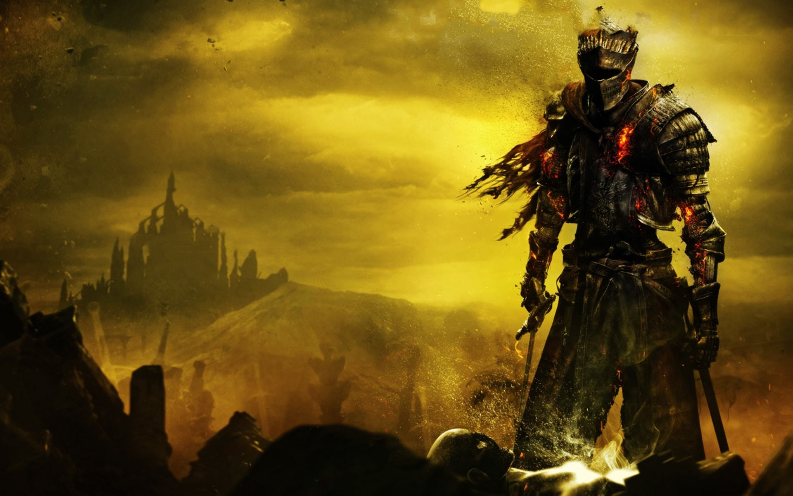
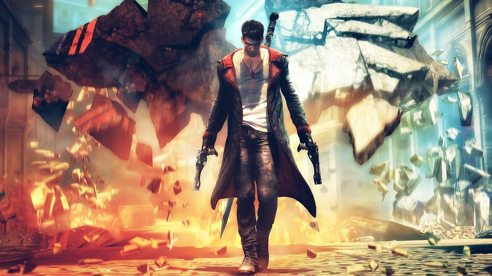
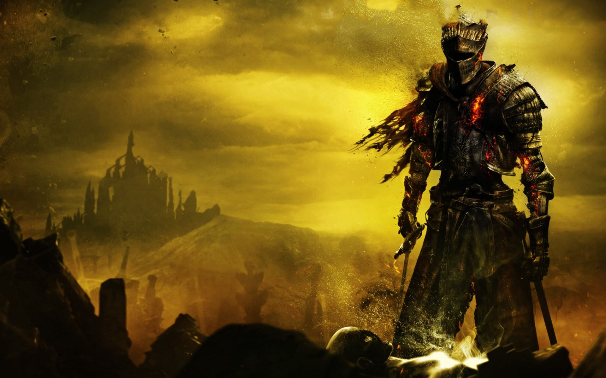
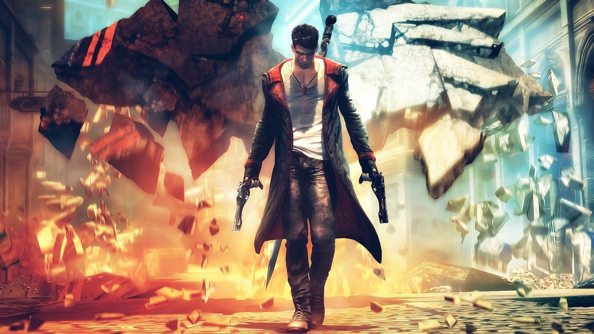

Bloodborne
"Bloodborne" é um jogo de ação e RPG desenvolvido pela FromSoftware e lançado para PlayStation 4. Ambientado em uma cidade gótica chamada Yharnam, o jogo coloca o jogador no papel de um caçador em busca de uma cura para uma misteriosa doença. O jogo é conhecido por seu estilo visual sombrio e atmosférico, combates desafiadores e uma narrativa envolvente que se revela através de lore escondido e encontros com criaturas grotescas. "Bloodborne" é aclamado por sua dificuldade e design complexo, oferecendo uma experiência intensa e imersiva.
Dark Souls3
"Dark Souls III" é um jogo de ação e RPG desenvolvido pela FromSoftware e lançado para PlayStation 4, Xbox One e PC. Ambientado em um mundo sombrio e decadente chamado Lothric, o jogo coloca o jogador no papel do "Cinders of the Lords," um protagonista que deve restaurar o equilíbrio do mundo. Conhecido por sua dificuldade implacável e combate preciso, "Dark Souls III" combina uma rica narrativa com um design de nível intrincado, oferecendo uma experiência desafiadora e imersiva. O jogo é aclamado por seu sistema de combate refinado e pela profundidade de sua lore e design de mundo.
Devil May Cry
"Devil May Cry" é um jogo de ação hack and slash desenvolvido pela Capcom. Lançado originalmente em 2001, o jogo segue Dante, um caçador de demônios com habilidades sobrenaturais, enquanto ele combate forças infernais para vingar a morte de sua família. Conhecido por seu combate estilizado e frenético, o jogo combina uma narrativa cheia de ação com uma jogabilidade dinâmica, oferecendo uma experiência intensa e visualmente impressionante. "Devil May Cry" é elogiado por sua criatividade em design de combate e pela construção de um mundo rico em mitologia.
Final Fantasy7
"Final Fantasy VII" é um RPG desenvolvido pela Square Enix, lançado originalmente em 1997. A história segue Cloud Strife, um ex-soldado que se junta a um grupo de resistência chamado AVALANCHE para combater a corporação Shinra, que está drenando a energia vital do planeta. O jogo é aclamado por sua narrativa épica, personagens memoráveis e inovações em gráficos e mecânicas de jogo. "Final Fantasy VII" é um marco no gênero RPG, influenciando muitos jogos futuros e se tornando um clássico amado pelos fãs.
Hollow Knight
"Hollow Knight" é um jogo de ação e plataforma desenvolvido pela Team Cherry. Ambientado em Hallownest, um vasto e subterrâneo reino em ruínas, o jogador controla um cavaleiro mudo enquanto explora cavernas, enfrenta inimigos e descobre segredos. O jogo é conhecido por seu estilo artístico distinto, ambiente atmosférico e combate desafiante. "Hollow Knight" combina elementos de metroidvania com uma narrativa envolvente e um mundo expansivo, oferecendo uma experiência profunda e imersiva.
Monster Hunter
"Monster Hunter" é uma série de jogos de ação e RPG desenvolvida pela Capcom. O jogador assume o papel de um caçador em um mundo repleto de monstros gigantes e perigosos, com o objetivo de derrotá-los e coletar recursos para melhorar equipamentos e armas. A série é conhecida por seu gameplay cooperativo, combate estratégico e a necessidade de preparação e planejamento. "Monster Hunter" destaca-se pelo seu mundo expansivo e dinâmico, oferecendo uma experiência desafiadora e envolvente para os jogadores que apreciam caçar e explorar.